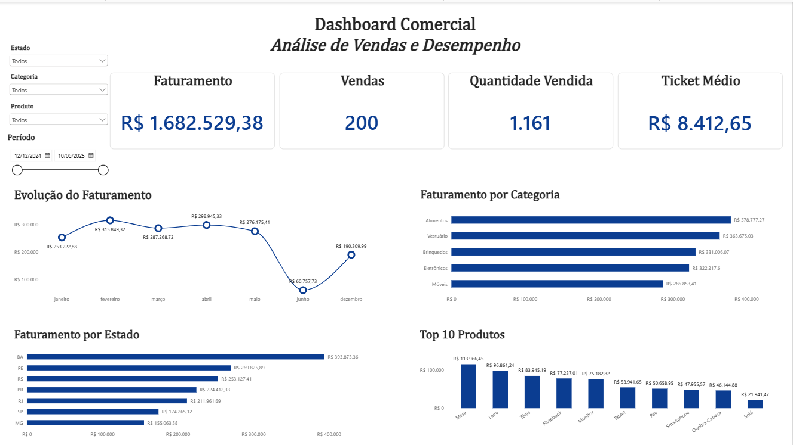

Estudante de Bacharelado em Tecnologia da Informação, direcionado para Análise de Dados. Construo projetos práticos com Power BI, SQL, Excel e ferramentas de tratamento e visualização de dados.
Meu foco é transformar informações em análises que sejam claras, úteis e orientadas a problemas reais.
Sou estudante de Bacharelado em Tecnologia da Informação na UNIVESP, com direcionamento para análise de dados e interesse em construir soluções que conectem tecnologia, negócio e tomada de decisão.
Minha formação prática combina experiência em suporte e tecnologia, organização de equipamentos e processos, além do desenvolvimento de projetos com dados.
Projetos construídos para demonstrar raciocínio analítico, tratamento de dados, modelagem e comunicação de resultados.

Dashboard interativo para análise de vendas, faturamento, ticket médio, estados, categorias e produtos.
Análise comercial com T-SQL, explorando indicadores, estados, categorias, produtos, comportamento mensal e benchmarks.
Projeto em preparação com Excel e Power Query para organização e análise de dados operacionais.
Secretaria da Educação do Estado de São Paulo · 2026
Atuação com preparação, organização e suporte de equipamentos tecnológicos em ambiente educacional.
UNIVESP · conclusão prevista para 07/2028
Formação com disciplinas de computação, estruturas de dados, sistemas computacionais e direcionamento para dados.
Atuação prática com manutenção, configuração e suporte de equipamentos.
Estou em busca de oportunidades em Dados e TI, especialmente em posições de estágio, análise de dados e funções relacionadas à tecnologia.
São Paulo, Brasil
LinkedIn · GitHub · E-mail